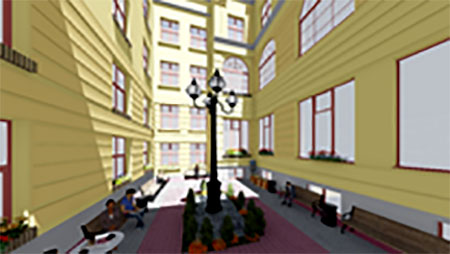
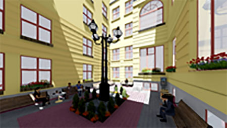

Головний корпус Львівського національного університету імені Івана Франка є однією із найкращих архітектурних пам’яток львівського неоренесансну другої половини ХІХ ст., збудований спеціально для Галицького крайового сейму. Як представницько-законодавчий орган австрійської провінції ”Королівство Галичини та Лодомерії з Великим князівством Краківським, князівством Освєнцімським і Заторським” Галицький сейм працював у цьому будинку протягом 1861 – 1914/18 рр. Будівлю сейму можна ставити в один ряд з іншими монументальними спорудами, які відображали поступ парламентаризму в центральноєвропейських країнах: приблизно у той же час виконувалися проекти будинку угорського парламенту у Будапешті та рейхстагу в Берліні. У 1920 р. будівлю було передано Львівському університету, де до сьогодні розміщується головний корпус навчального закладу.
Особливе зацікавлення викликає архітектурний стиль будинку головного корпусу Університету. Фасад з боку парку є складною композицію з двома боковими і центральним ризалітами, має загальну довжина у 108 м. Колонада центрального ризаліту збудована з використанням елементів коринфського ордеру, бічні входи мають ознаки доричного стилю, вікна прикрашені малими іонічними колонами. І хоч загалом будинок є поєднанням стилів неоренесансу та необароко, однак окремі елементи виконані із залученням інших стилістичних рішень.
Як пам'ятка культури та архітектури, будинок головного корпусу Львівського університету є надбанням полікультурного Львова. Відновлення його автентичного вигляду відображає тяглість австрійської, польської та української культури.
Приблизно 1758 рік.До першочергових робіт у будинку Головного корпусу Університету належить облаштування дворику, відновлення автентичних елементів фасаду, ремонт мансардних поверхів з метою використання корисних площ в навчальному процесі.
Приблизно 1758 рік.Історична довідка:
14 жовтня 1869 р. Галицький сейм постановив побудувати, або придбати будівлю для засідань, однак через брак коштів до цього задуму повернулися лише у 1874 р. У квітні 1875 р. сейм вирішив придбати за 141 тис. 128 зол. рин. земельну ділянку під будівництво. Того ж року було оголошено міжнародний конкурс, програму та умови якого розробив архітектор Юзеф Яновський. На конкурс надійшло 30 проектів, які впродовж двох тижнів були виставлені на громадське обговорення, чотири роботи були відзначені преміями. Однак, жоден із проектів не міг бути реалізованим без змін, відтак у квітні 1876 р. остаточний варіант проекту замовили директорові міського будівельного управління Львова Юліушеві Гохберґеру. За кошторисом витрати на будівництво мали становити 964 тис. 377 зол. рин 66 центів.
Земляні роботи розпочалися 1 квітня 1878 р., а вже 29 вересня цього ж року відбулась урочиста церемонія закладення наріжного каменя. Основні роботи завершено влітку 1881 р. Загалом, будівельна кампанія з купівлею земельної ділянки, адмініструванням, проектом, оздобленням і вмеблюванням обійшлася 1 млн 312 тис зол. рин. 71 цент., що становило, приблизно, половину тогочасного бюджету всієї провінції. У процесі будівництва було застосовано оригінальні технології будівництва й інженерні конструкції. Наприклад, професор Леонард Марконі першим у Львові застосував гідравлічне вапно для орнаментації фасадів. У вестибюль і залу засідань денне світло потрапляє через засклену стелю і дах, які змонтовані на складних металевих конструкціях зі специфічними пристосуваннями для їх обслуговування, а підлога зали засідань опирається на міцні металеві стовпи. Вечірнє освітлення приміщень початково здійснювалося за допомогою гасових ламп, а 14 червня 1882 р. завдяки інженерам Р. Ґостковському та К. Рихновському, тут з’явилось електричне світло, яке отримували за допомогою парової машини, встановленої у дворі. Сходи зроблені зі стійкого до стирання теребовлянського каменю. Раціональними і практичними були системи опалення віденської фірми ”Гольдорф і Брюкнер”, вентиляції та вся інфраструктура. Доречі, серед найновіших досягнень того часу, які було використано – ”ватерклозети”. Для водопостачання встановлювалася спеціальна помпа з газовим приводом.
Скульптурному оздобленню та малярським творам у Галицькому сеймі надавали особливого ідейного значення. Вони мали відобразити головні цінності епохи і призначення споруди. На аттику мала з’явитися пластична композиція ”Геній Вітчизни”, що поширює свою опіку на Галичину з Великим князівством Краківським, які, у свою чергу, символічно представлені жіночою постаттю в образі ”Вісли” і чоловічою – в образі ”Дністра”. Нижче – постаті ”Правда”, ”Любов”, ”Віра” і ”Справедливість”, при вході – залишалися групи ”Освіта” і ”Праця”, а у вестибюлі мали постати дві пари чотирьох володарів Русі та Польщі: Мєшко І і Казимир ІІІ, та Володимир Великий з Ярославом Мудрим. Після відповідного конкурсу цей варіант був утілений в життя майстрами Теодором Риґером (надаттикова композиція і вхід зовні), Зиґмунтом Трембецьким (”Любов”, ”Справедливість” і чотири правителі), Феліксом Мікульським (”Правда” і ”Віра”). Крім того, різні елементи пластичного декору виконали Леонард Марконі, Тадеуш Баронч і Юліан Ґорґолевський. Навколо будинок прикрашений фігурами левів, які тримають щити з гербами міст. Зовні та в інтер’єрах споруди є багато ліпних гірлятд, маскаронів, каріатиди тощо.
Після розпаду Австро-Угорської імперії та відновлення Польської держави, 18 листопада 1918 р. Міністерство віровизнань та освіти спеціальним розпорядженням оголосило, що бере Львівський університет під свою опіку. На підставі рішення Cейму та Сенату Другої Речі Посполитої від 20 березня 1920 р. Львівському університету передано сеймову будівлю, яка стала головним корпусом. Тоді ж було проведено реконструкцію зали засідань. Значну частину символіки знищили, дещо вивезли до Кракова та Варшави. Хоч аудиторний фонд університету і розширився, проте, з огляду на зростання кількості студентів, нестача приміщень відчувалася надалі. Тому, впродовж 1928–1934 рр., збудували новий лекційний зал на 600 місць – “collegium maximum” (тепер приміщення Центру культури та дозвілля “Лис Микита”).